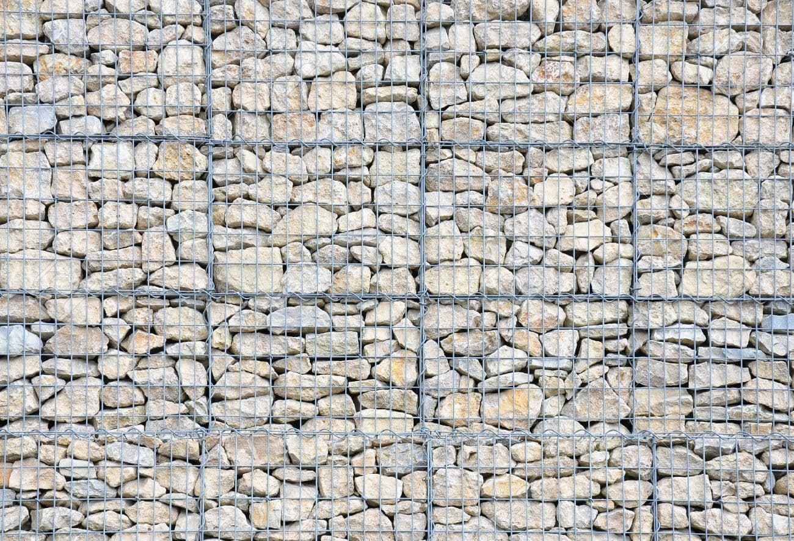

<!DOCTYPE html>
<html lang="no"></html>
<head>
  <title>Velkommen til gabionbutikken.no</title>
  <meta charset="utf-8">
  <meta name="viewport" content="width=device-width, initial-scale=1, user-scalable=no">
  <link rel="stylesheet" href="./assets/css/base.css">
  <link href="https://fonts.googleapis.com/css?family=Open+Sans" rel="stylesheet">

</head>
<body>  <header>
    <div id="menu-mobile">
      <span></span>
      <span></span>
      <span></span>
    </div>
    <nav id="navigation-bar">
      <ul>
        <li><a href="index.html">Hjem</a></li>
        <li><a href="spesifikasjoner.html">Spesifikasjoner</a></li>
        <li><a href="trivia.html">Trivia</a></li>
        <li><a href="montering.html">Montering</a></li>
        <li><a href="om.html">Om oss</a></li>
      </ul>
    </nav>
  </header>

  <section class="home">
    <h2>Velkommen til gabionbutikken.no!</h2>
    <div id="picture">
      <div class="shade"></div>
    </div>
    <div id="right-bg"></div>
    <article>
      <h3>Om gabioner</h3>
      <div class="article-wrap">
        <p>Gabioner er <strong>nettingkasser som fylles opp med stein</strong> for bygging av gjerder, steinvegger, støtte murer, dammer og annet. Gabionene kan stables inntil og oppå hverandre og <strong>brukes både som dekorative vegger og fasader</strong>. Gabioner kan benyttes til alt fra støttemur, støyskjerming og fasader</p>
        <p>til flomsikring. Gabioner er meget <strong>godt egnet som erosjonssikring</strong> og benyttes ofte ved veibygging og damsikring, men også som rimelig <strong>støttemur på privat eiendom</strong>. En mur bygget med gabioner kan håndstables, og fylles opp med spade eller en minigraver.</p>
      </div>
      <button>Les mer</button>
    </article>
  </section>

  <footer>
    <ul>
      <li>Adresse:</li>
      <li>Epost:</li>
      <li>
        <ul>
          <li>Telefon:</li>
          <li>Mobil:</li>
        </ul>
      </li>
    </ul>
  </footer>

  <script type="text/javascript" src="assets/js/global.js" async></script>
</body>